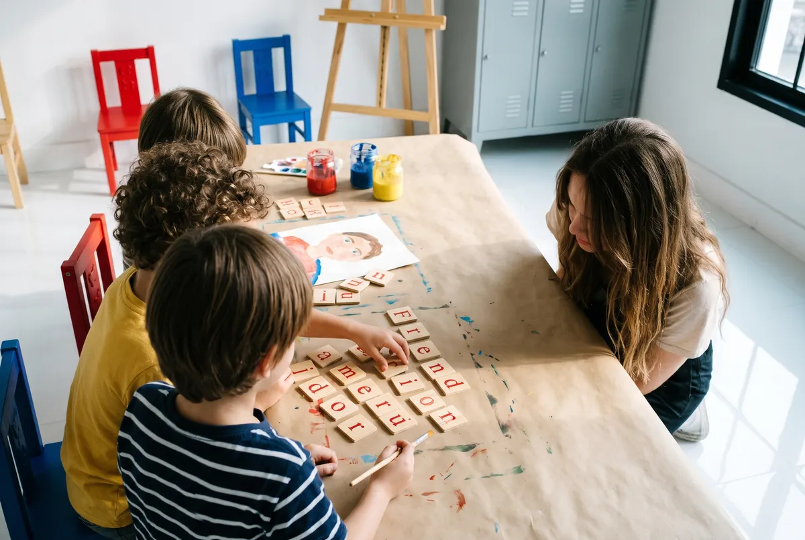
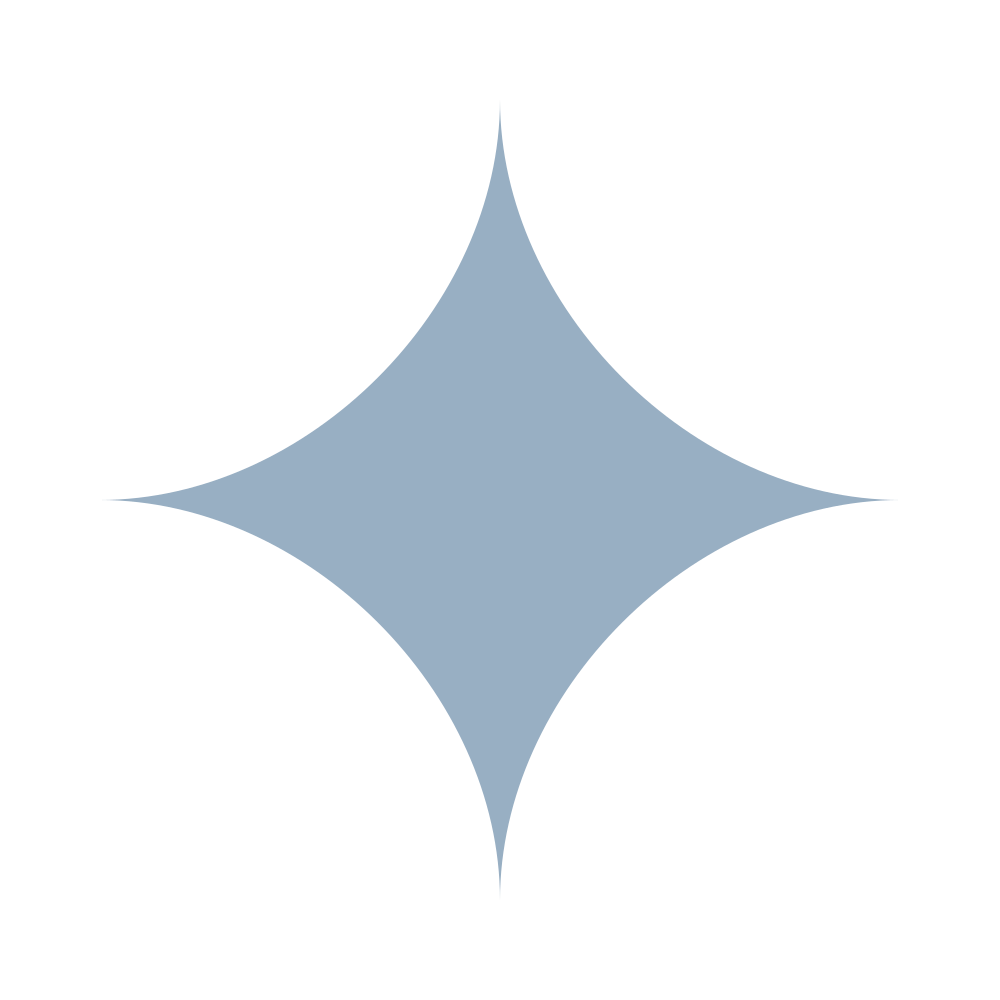
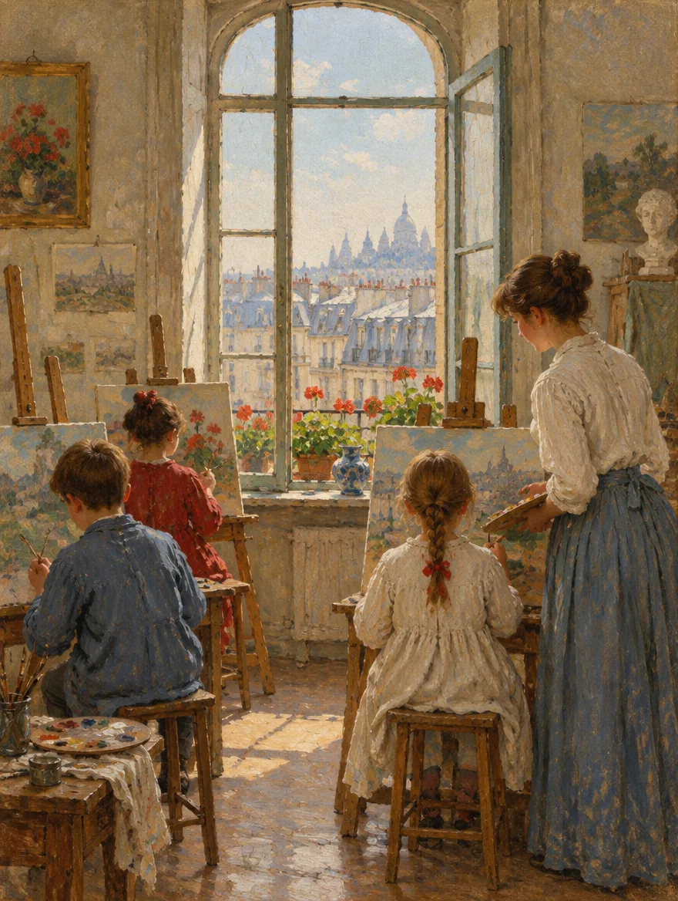
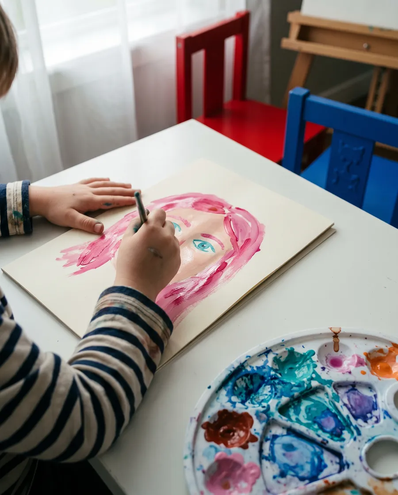
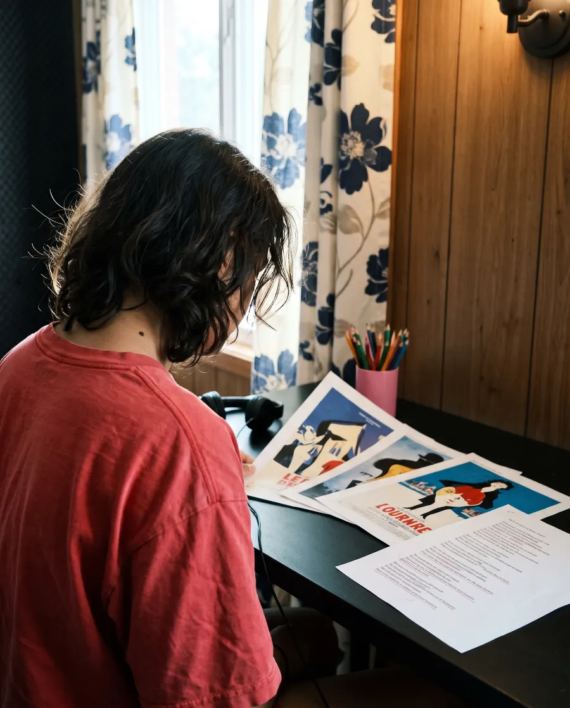
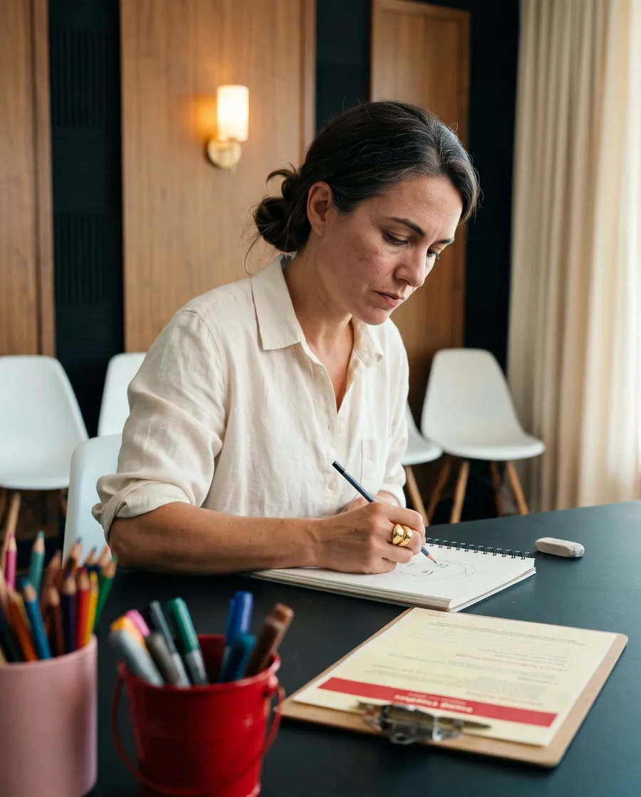
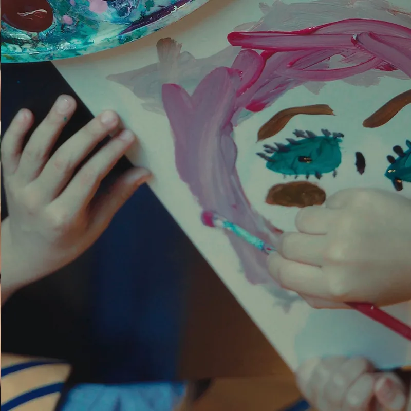
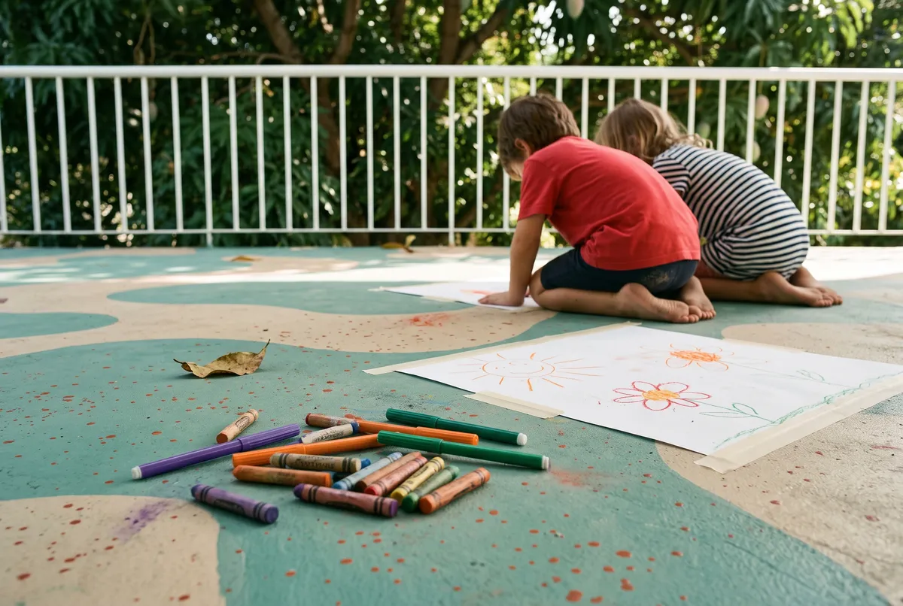
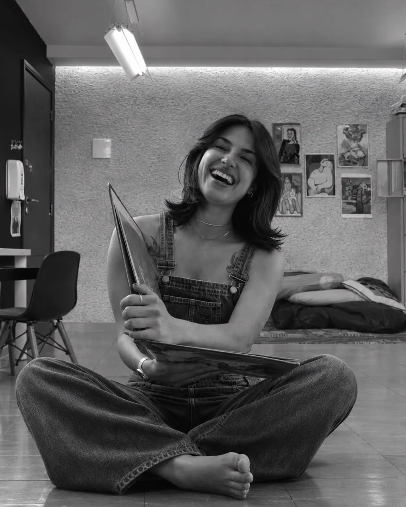

Intensivo de verãoIntensivo de verão
[idades · datas · vagas da edição]
Quero me inscrever: Intensivo de verãoLago Sul · Brasília
No atelier do Lago Sul, aula individual ou turma de até 4 alunos. On-line, aula individual. Para crianças a partir de 3 anos, jovens e adultos.


A mesma proposta, pensada para cada idade: a língua aprendida com desenho, pintura, música, leitura e conversa.

A partir de 3 anos
faixa a confirmar
AdultosAula para mais de uma pessoa da família? Ver todos os cursos
Uma aula de verdade
Je suis… (eu sou…)
Para aprender o verbo être (ser, estar), o aluno desenha o próprio rosto. Enquanto se apresenta em francês, aprende o nome dos olhos, do nariz, da boca e do cabelo e fala das próprias características.
O autorretrato é só um exemplo. O mesmo caminho vale para outros temas e objetos, como a casa, a comida, os animais e as cores: cada assunto ganha a sua obra e a sua linguagem.
A língua é vivenciada, não apenas ensinada.


Imersões de francês e arte nas férias. Cada edição aparece aqui quando a programação estiver definida, com idades, datas e vagas.

Intensivo de verão[idades · datas · vagas da edição]
Quero me inscrever: Intensivo de verão
Colônia[idades · datas · vagas da edição]
Quero me inscrever: Colônia
A Lang'Art
A Thiessa Monteiro foi alfabetizada em Paris, aos 6 anos. A mãe, formada em artes visuais, perguntou um dia: por que não unir o francês e a arte? Dessa conversa nasceram o método e o material que a equipe usa em todas as aulas.
Minha filha espera ansiosamente pelo dia da Lang'Art. Ela chega em casa contando palavras novas em francês e mostrando, toda orgulhosa, o que criou.
Depoimento de jovem ou responsável, quando houver um autorizado.
Depoimento de aluno adulto, quando houver um autorizado.
QI 21, Lago Sul, Brasília.